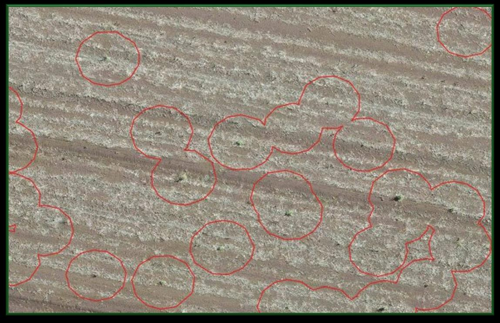
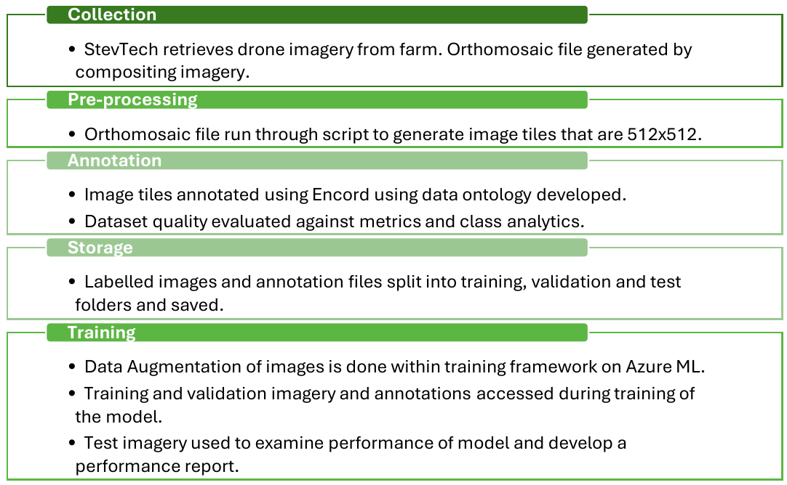
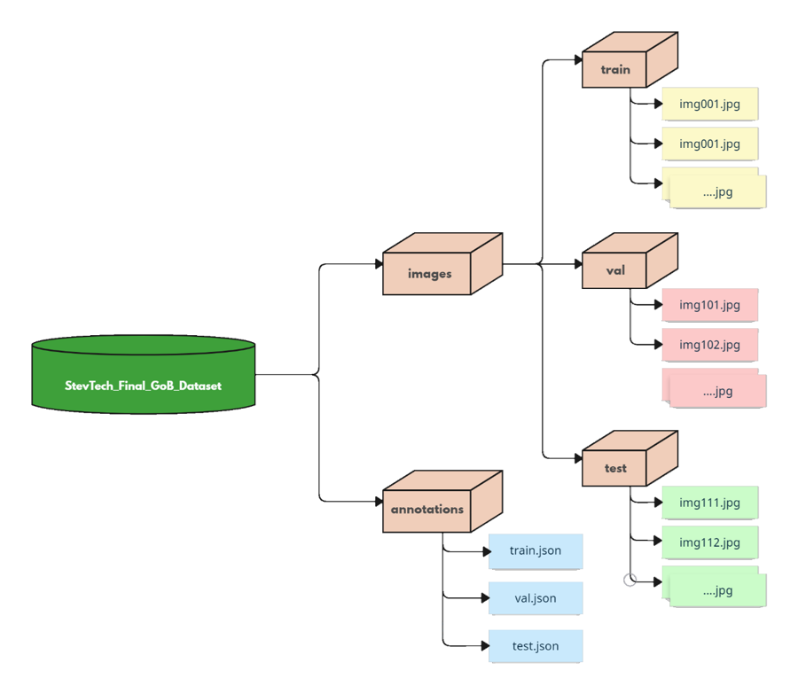
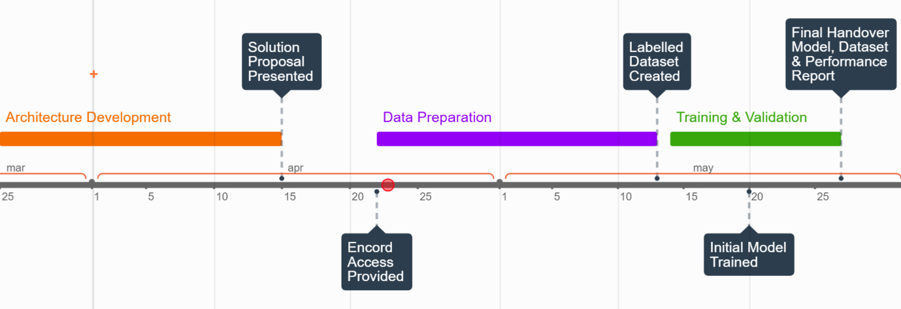

Computer Vision
Weed Detection
A deep learning computer vision system that finds weeds in drone imagery,
built for industry partner StevTech.
Design in Mechanical and Mechatronic Systems (UTS Industry Studios).
- Challenge
- Locate weeds in drone imagery so growers can target treatment.
- My contribution
- Worked on a four-person team with StevTech and UTS mentors.
- Result
- The team presented a data and model architecture proposal. The project video shows the final outcomes.

Overview
This was an industry project with StevTech, completed in the UTS Industry Studios subject Design in Mechanical and Mechatronic Systems. Our team developed a deep learning-based computer vision system that uses object detection to locate weeds in UAV (drone) imagery.
The goal was to help StevTech offer scalable precision agriculture solutions. Weed control today is costly, relies heavily on chemicals and needs a lot of labour. Detecting exactly where weeds are lets farmers treat only those areas.
I worked on the project with Shahd Sumrain, Jacob Ryan and Sanka Kotinkaduwa, with support from StevTech and our UTS Faculty of Engineering and IT mentors. The project ran in three phases: architecture development, data preparation, and model training and validation. Our solution proposal, presented in April 2025, set out the data and model architecture. Most of this page is based on that proposal, and the video below shows the final outcomes.
Project Video
Our short video covers the project journey and the final outcomes.
Project video, posted on LinkedIn by teammate Shahd Sumrain.The Problem
The fallow phase is the period between harvesting one crop and sowing the next. Weeds that emerge during it strip the soil of nutrients and moisture, which directly reduces the next crop’s yield. Because the paddock should be bare soil at this stage, any living vegetation counts as a weed. That makes it a “green on brown” detection problem: find green plants against brown soil.

Green on brown weed detection: weeds circled in drone imagery of fallow farmland (StevTech, 2025).Today, fallow weeds are mostly controlled by blanket spraying herbicide over the whole paddock. It’s simple and it scales, but it ignores where the weeds actually are, which causes several problems:
- Excessive chemical use. Weed-free areas get sprayed too. That wastes herbicide, raises costs, increases the risk of runoff and environmental contamination, and contributes to herbicide-resistant weeds.
- Labour shortages. Farms, especially mid-sized operations on tight margins, are short of workers and skilled agronomists. Repeated spray passes across the season add to the cost and workload.
- Farmer scepticism. Many farmers have tried technology that didn’t deliver what it promised, so a new solution has to prove itself.
- Scalability. Existing detection systems struggle to scale to large farms and to cope with different soil types, lighting and terrain.
Locating weeds precisely from drone imagery allows targeted spraying instead, so herbicide is applied only where it’s needed.
Data Architecture
Choosing the right labels
Two questions from our literature review shaped how we labelled the data:
- Classification or object detection? Classification models label a whole image as “weeds” or “no weeds”. They’re simpler, but they struggle with mixed scenes and can’t say where the weeds are. Object detection models such as YOLO and Faster R-CNN draw bounding boxes around each weed, which is the spatial information a sprayer needs. Instance segmentation (e.g. Mask R-CNN) is even more precise, but much more computationally expensive.
- Species or presence? Models that identify individual species can score highly on their own dataset but generalise poorly to new fields, soils and weed species. Even a highly accurate species-specific Mask R-CNN lost its generality on aerial data. Detecting weed presence generalises much better, and presence is what matters in the fallow phase.
So we designed an object detection ontology that groups weeds by shape, not species. This follows practical field guides such as GRDC’s Common Weeds of Grain Cropping – The Ute Guide, which group weeds by appearance. We also added classes for common obstacles, so the model learns not to confuse them with weeds:
| Category | Classes | Notes |
|---|---|---|
| Weeds | Broadleaf, Grassy/Grass-like, Woody shrub-like, Generalised green | Optional growth-stage attribute: seedling, vegetative or reproductive |
| Obstacles / interference | Farm infrastructure, Vegetation, Bodies of water, Machinery | Buildings, fences and powerlines; trees; ponds, swamps and creeks; farm equipment and vehicles |
The growth-stage attribute is optional for now, but it gives StevTech room to make the system more detailed as it scales. The dataset was required to have at least 500 instances per class, with a balanced class distribution.
Data pipeline
StevTech flies drones over the farm and stitches the images into a single orthomosaic. A script cuts the orthomosaic into 512 × 512 image tiles, which are annotated in Encord using our ontology. The labelled tiles are then split and stored, ready for training on Azure ML.

Planned data pipeline, from drone imagery to model training.
Dataset folder structure.The dataset is split 90% training and 10% validation. The test set is separate: about 100 new drone images the model has never seen, which gives an honest measure of how well it generalises to new fields.
Before training, we check dataset quality using:
- Class distribution analysis. Histograms of annotations per class in Encord Analytics, to catch imbalance.
- Inter-annotator agreement. Label overlap (IoU) and class and attribute agreement between annotators, to make sure labelling is consistent.
Data augmentation
Augmentation lets the model see variations it may meet in the field, such as lighting, weather, soil colour and camera angle, without collecting more imagery:
| Type | Technique | What it simulates |
|---|---|---|
| Geometric | Horizontal/vertical flip, rotation | Different camera angles and object orientations |
| Photometric | Brightness/contrast, colour jitter (hue, saturation) | Different lighting conditions and soil colours |
| Photometric | Gaussian noise and blur | Sensor noise and motion blur from the drone |
| Mixing | MixUp and CutMix | Regularisation; learning each class by its distinctive features |
Model Architecture
Requirements
Because the model is meant to solve a real agricultural problem, we set strict targets. Missed weeds (false negatives) and wasted spraying (false positives) both cost farmers money, and slow inference would hold up weed mapping.
| Metric | Target |
|---|---|
| Accuracy | ≥ 90% |
| Precision, recall and F1 score | ≥ 90% each |
| Inference speed | 10 FPS on a 16 GB GPU (10,000 images in about 16.7 minutes) |
Literature review
- Vision transformers for sugarcane disease. Of 12 architectures tested, DeiT3-Small performed best, with 93.79% accuracy, 91.27% precision and a 90.96% F1 score. It beat ResNet50, Xception, EfficientNetV2-Small, ViT-Base and Swin-Base, even on a small dataset of 6,748 images. DeiT is a classification model, though, so on its own it can’t locate weeds.
- WeedVision (DETR vs RetinaNet). On a dataset of 203,567 weed images labelled by species and growth stage, RetinaNet outperformed DETR, with a mAP of 0.904 vs 0.840, and ran faster at 7.28 FPS. That makes it better suited to near-real-time use. Both models found young seedlings harder to detect than mature plants.
Selected architecture
| Language | Python |
| Library | PyTorch |
| Model | RetinaNet (one-stage object detector) |
| Backbone | ResNet |
| Learning | Fine-tuning a COCO-pretrained model |
| Optimiser | Adam |
RetinaNet is a one-stage detector that handles the large, varied datasets typical of agriculture efficiently and scales well to real-world use. ResNet was the best-performing backbone for RetinaNet in the literature. It also comes in different depths, so the model can grow with StevTech’s dataset.
Instead of training from scratch, we planned to use transfer learning, fine-tuning a model pretrained on the COCO dataset. COCO includes potted plants, so the model starts with some useful features. Fine-tuning cuts computational cost, convergence time and the risk of overfitting on a smaller dataset.
Validation and testing
We planned to use TorchEval in PyTorch to measure accuracy, mAP, precision, recall and F1 score. Before committing to RetinaNet, we planned to test all six shortlisted architectures on StevTech’s original simple dataset. That would confirm the choice for our use case and leave fallback options ready if problems came up.
To keep the comparison fair, the confidence threshold, number of epochs, learning rate and batch size were held constant across every model. The confidence threshold matters most, because it directly shifts precision, recall and F1. We also noted a limitation: a fixed number of epochs can disadvantage models that converge more slowly.
Implementation Plan

Planned timeline, March to May 2025.| Milestone | Duration | Target date |
|---|---|---|
| Model and data architecture proposed and accepted | 3 weeks | 15 April 2025 |
| Access to the Encord annotation platform | 1 week | 22 April 2025 |
| Initial labelled dataset created | 3 weeks | 13 May 2025 |
| Initial model trained | 1 week | 20 May 2025 |
| Final handover: fine-tuned model, labelled dataset and performance report | 1 week | 27 May 2025 |